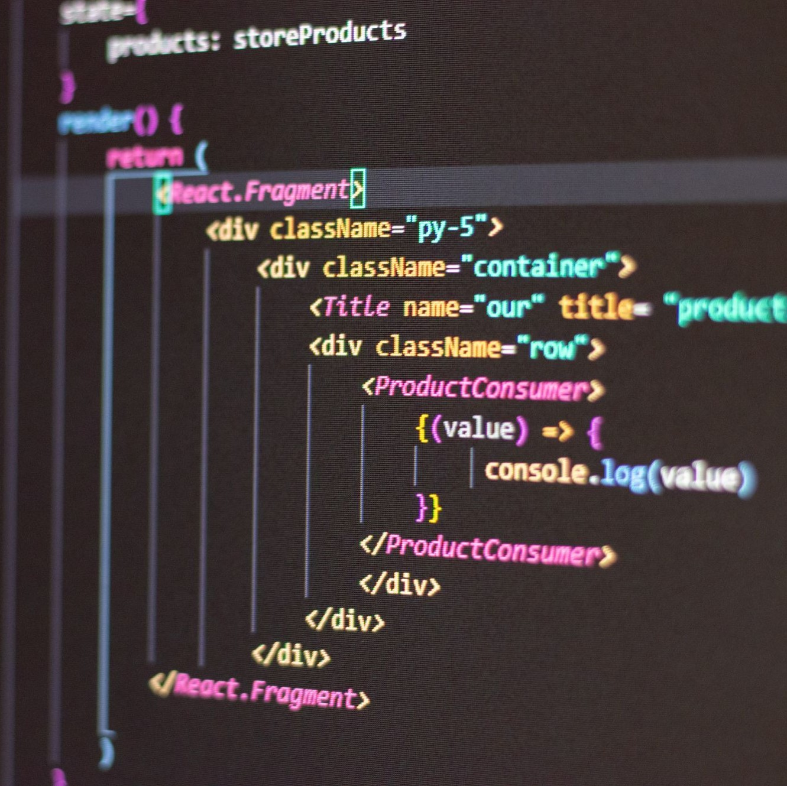

After just one week of learning JavaScript I can confidently say that it’s my favorite programming language. Learning JavaScript has been extremely smooth so far as I had a strong foundation with the Java language. I noticed there are many aspects of JavaScript that are much more forgiving than other languages such as C and Java. Some attributes include not having to declare data types for variables, the availability of heterogeneous collections, and functions being first class. JavaScript has taught me the importance of efficient code and how to implement strategies that will allow me to become an effective programmer. Moreover, The simplicity of this language allows problem solving to be more simple and concise, which has motivated me to continue learning this language and to enhance my skills on becoming an efficient developer.
Athletic Software Engineering is a great way to practice programming under pressure. This style of learning is intended to simulate real life situations within the Software Development career field, specifically having to meet important deadlines while maintaining optimal/efficient code. I believe this is a great way for students to enhance their programming skills, especially since previous ICS classes had assignments where we had week(s) to complete a single program.
Although I expect WODs to become increasingly stressful throughout the semester, they have been extremely fun and have required me to critically think as I work under pressure. I noticed my main flaw when programming is thinking too much about the problem at hand which often leads to long sessions of inefficient programming. However, through the Athletic Software Engineering style of learning paired with JavaScript, I believe I’ll be able to dramatically tune my cognitive and logical skills that will lead me to become a better programmer and Software Engineer.